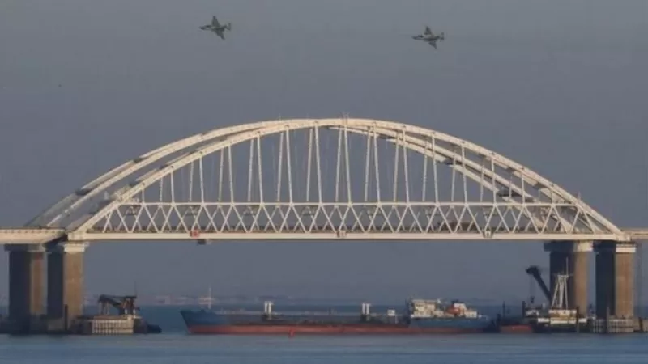
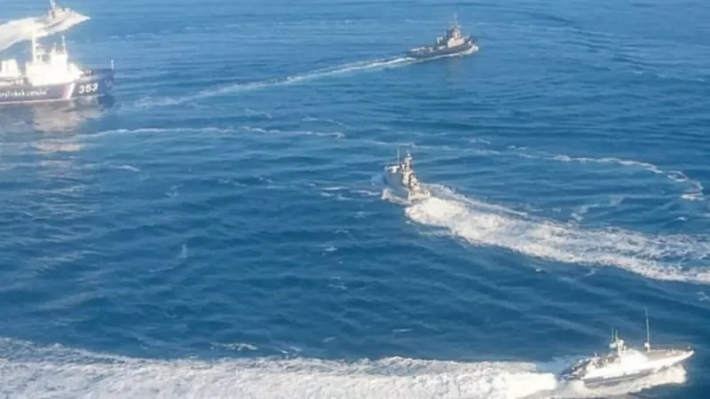

Bu, 2008-ci ilin Rusiya-Gürcüstan müharibəsi və 2014-cü ildə Moskvanın yarımadanı ilhaq etməmişdən əvvəl Krımda "balaca rus əsgərlərinin" (rus xüsusi qüvvələri) peyda olmasına da aiddir. Beləliklə, Moskvanın bazar günü baş verənlərə və gələcəkdə nə baş verəcəksə ona görə də günahı Ukrayna prezidenti Poroşenkonun hökumətində görməsini gözləyin. Ukrayna parlamenti bazar ertəsi Kerç boğazında üç gəmisinin Rusiya gəmiləri tərəfindən saxlanmasından sonra ölkədə hərbi vəziyyətin tətbiqi barədə qərar verəcək. BMT Təhlükəsizlik Şurası da təcili iclas keçirəcək. Hadisədə iki silahlı qayığın və təyyarənin ələ keçirildiyi və bir neçə ukraynalı dənizçinin yaralandığı deyilir. Hadisəyə görə tərəflər bir-birini günahlandırır.
 Həmçinin bax:Həmçinin bax:
Ünvanımız